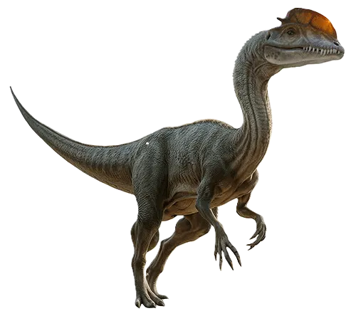

Dilophosaurus
Lagarto de dos crestas
Terópodo/Dilophosauridae
Dinosaurio carnívoro ubicado en el centro oeste de EE.UU..
Fue uno de los primeros dinosaurios carnívoros. Llamaba la atención por sus crestas, probablemente coloridas, catalogado en el año 1870 y vivió hace 193 millones de años. Ha aparecido varias veces en la cultutra popular represenrado como un escupidor de veneno, algo imposible de comprobar a partir de los fósiles.
Altura: 2m
longitud: 7m
Peso: 350Kg
velocidad: 48Km/h
periodo: Jurásico inferior
Especímenes: 3
